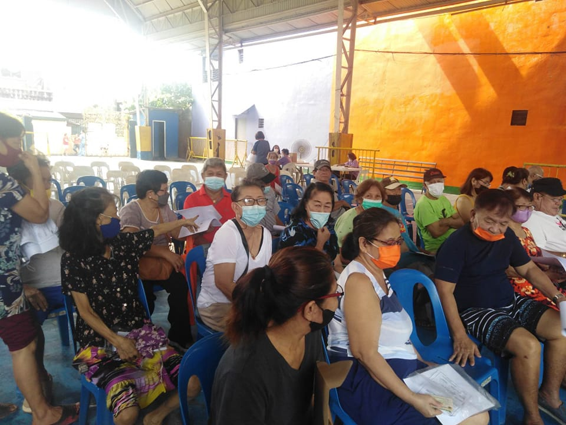

SATURDAY, MARCH 11, 2023 / Pasig City OSCA Facebook Page
OSCA ADVISORY | SENIOR CITIZEN ANNUAL VALIDATION
Alamin po muna sa inyong Barangay kung kailan nakaschedule ang inyong kapitbahayan / hoa / compound /
subdivision / village / o street kung kailan dapat magtungo sa OSComms Desk at magpa-validate.
Magpapa update lang po sila ng active contact number at present address information, at may kaunting interview o
kumustahan upang maaddress and bawat tanong o concern ng bawat senior citizen sa inyong barangay.
Hanggang August pa po ito kaya hindi po kailangan na magmadali. Kailangan pong tignan muna ang weekly schedule sa inyong barangay bago pumunta.
Mga dapat dalhin kung ang senior ang pupunta:
(1) Senior ID original at 2 pcs photocopy
(2) Blue/Green Cash Card / Cash Card Stub 2022
Kung family representative:
(1) Senior ID original at 2pcs photocopy
(2) Blue/Green Cash Card / Cash Card Stub 2022
(3) authorization letter, may 3 pirma o thumbmark
(4) recent photo magkasama ang senior at representative (ipakita o iprint)
(5) xerox ng gov't issued ID ng representative
*Kasabay na rin sa schedule ang pagpapasa ng Benefit Cash Card Application (Landbank) Form ng mga bago pa lamang mag aapply nito o newly registered senior citizens.
Hanggang August din po ang pasahan nito.
Muli po magtanong o magbasa ng announcement post sa Facebook page ng kanilang Barangay Salamat po!
PS. I-Copy Paste po ito sa inyong pag repost o pag share. Salamat po!
Mga dapat malaman tungkol sa
ANNUAL SENIOR CITIZEN VALIDATION
LAYUNIN NG VALIDATION
1. makita, makumusta at muling makapanayam ang bawat senior citizen ng Pasig gayundin ang makapagpa-update sila ng kanilang profile information,
at mapanatili ang kanilang pangalan sa ating active master list ng mga lehitimong myembro ng Senior Citizen ng Pasig.
2. ma-update o mapalitan sa ating database kung mayroong mga naging pagbabago sa present address, active contact number, health condition,
at iba pang kailangan natin malaman tungkol sa kundisyon ng senior na maaari nating mailapit sa mga programang pang-social welfare na mayroon ang ating gobyerno
3. kung may mga naging problema sa aplikasyon o sa kwalipikasyon sa programang inapplyan ng senior,
ang kanilang mga katanungan, mungkahi o iba pang concerns ay dito natin mas nabibigyan ng atensyon, paliwanag at solusyon upang matulungan.
4. dito rin tayo kumukuha ng mga actual data o bilang ng mga benepisyaryo na
mahalagang basehan sa bawat bagong programa o mga ordinansa na inilulunsad ng ating LGU. (Hal. Bilang ng senior na PWD, bedridden, relocatees,
indigent, retired professionals, displaced workers, at iba pang mahahalagang uri ng social sector na nakakatulong sa pagkakaroon natin ng "Data-Driven Governance" na
syang isinusulong at pinag iigting ng ating Pamahalaaang Lokal.
FACE-TO-FACE
Ito po ay kailangang face-to-face kaya mahalaga po na nandito po sa Pasig ang senior, maliban kung sila ay may kundisyon gaya ng bedridden,
o iba pang kadahilanan, nagsasagawa ang OSCA ng home-visit validation para sa ating mga senior citizens na hindi na kayang magtungo pa sa ating validation.
AUTHORIZED FAMILY REPRESENTATIVE
Hinihikayat naman po natin ang KAPAMILYANG REPRESENTATIVE na sya ang magtungo sa ating validation,
dala lamang ang mga dokumentong patunay na sila ay kapamilya (asawa / anak / apo / kapatid /1st degree).
Kung ang senior ay nagbabakasyon o nasa labas ng syudad sa kasalukuyan, at hindi makakapagpasa ng picture ang representative kasama ang senior,
ay maaaring hintayin nalang pong makabalik sa Pasig ang senior bago po natin ipa-validate. Ito po ay hanggang August po.
BY SCHEDULE
Sa pakikipag ugnayan at aktibong pagsuporta ng ating mga Barangay Kapitan sa ating OSCA Communications Team o OSCOMMS
ay nagkaroon tayo ng SCHEDULE per street / purok / village / subdivision / HOA upang malimitahan ang dami ng seniors na magtutungo sa barangay sa isang araw.
Abangan lamang po ang post ng bawat barangay sa kani-kanilang FB Page upang malaman ng senior ang petsa at oras kung kailan sila naka-schedule upang pumunta
sa tanggapan ng OSCOMMS sa kanilang Barangay Hall. Nakasaad din sa schedule kung may mga pag-iiba ng lugar kung
saan ang validation, (Hal, Barangay Hall / Senior Office / Covered Court / etc...
Nakaalalay po ang ating Pamahalaang Barangay sa venue at iba pang mga pangangailangan ng mga sneior citizens para sa ikaayos ng ating validation.
Kung halimbawang naka-schedule sila subalit hindi nakarating, magkakaroon pa po tayo ng mga susunod na schedules at hanggang Agosto pa naman po ito.
Layunin natin na bago matapos ang Agosto ay wala nang maiwan at lahat ng senior citizens ng Pasig ay mapabilang sa ating active master list.
DAGDAG MAHALAGANG PAALALA:
Hindi po kasama sa Validation ang mga senior citizen ID holder na wala pang 2 taon na residente at COMELEC registered sa Pasig.
Ibig sabihin sila po ay newly-transferred palang po o galing sa ibang syudad o probinsya na kakalipat pa lamang ng Pasig.
Ang mga nagpapa validate lang po ay mga dati na pong nasa masterlist na nakapagpasa na ng Landbank Form noon, ATM Holders man o hindi pa.
Ang mga bago pa lamang na magpapasa ng Landbank Form at qualified na mag avail ng benefit cash card ay isasabay na rin po sa Validation 2023.
Abangan po sa mga susunod na posts ang mga schedule ng barangay o kaya ay
maaring magcheck na ng post ng Barangay FB Page tungkol sa schedule ng validation sa kanilang barangay.
Salamat po!